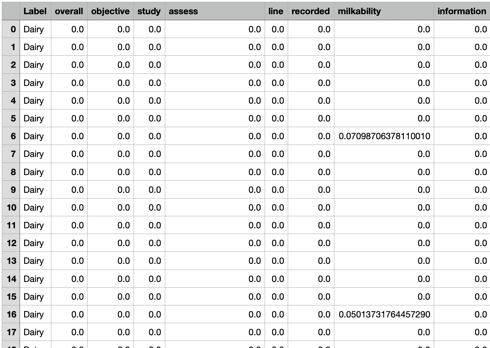

Navie Bayes - Text data(Python)
The text data is the same used in Python text data clustering page - the text data gathered from PubAg website. The text file contains five labelled data - "Diary", "Corn", "Organic Farms", "Wheat", and "Farms". Since it's beeing processed by the CountVectorizer package in Python, the text data is almost clean and needed to be further analyzed by Python
The Python markdown file is embeded below (dowonload)
:
Take a glance of the text data in word count format:
- The word count format after stemming (download):

- The word count format after stemming and bernoulli binary approach (download):
- The word count format after TFIDF normalization (download):
- The word count format after stemming and TFIDF normalization (download):
WordCloud Visualizations
The WordCloud visualizations are generated from the five dataset grouped by the labels, followed by the order, "Dairy", "Corn", "Farms", "Wheat", and "Organic Farms".